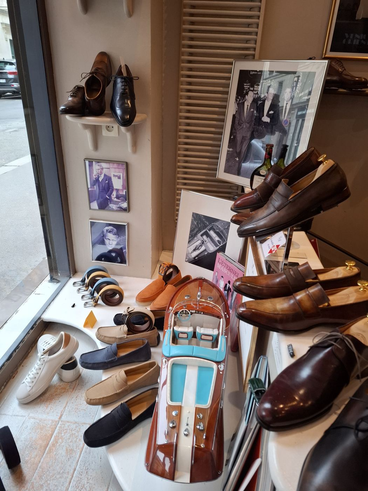
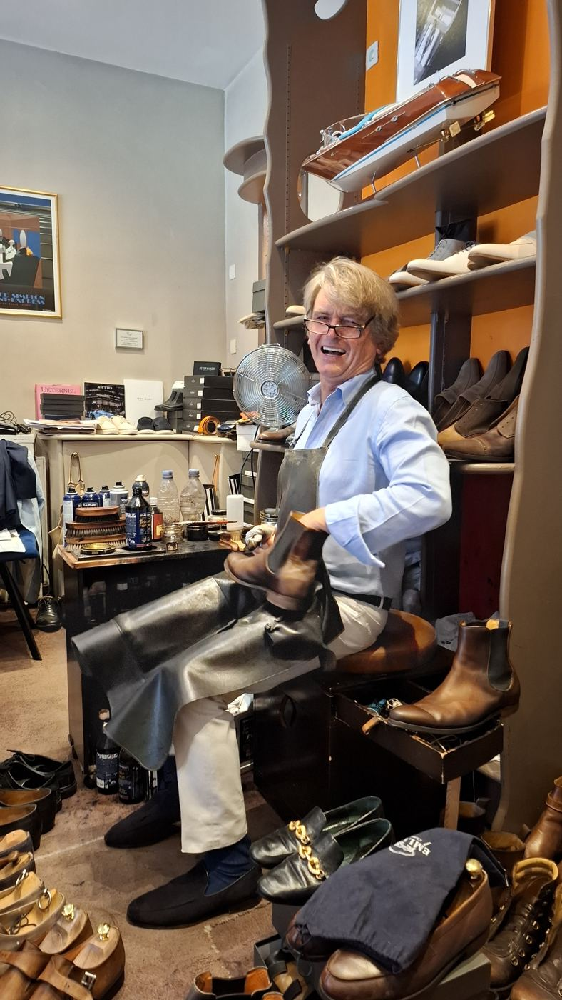
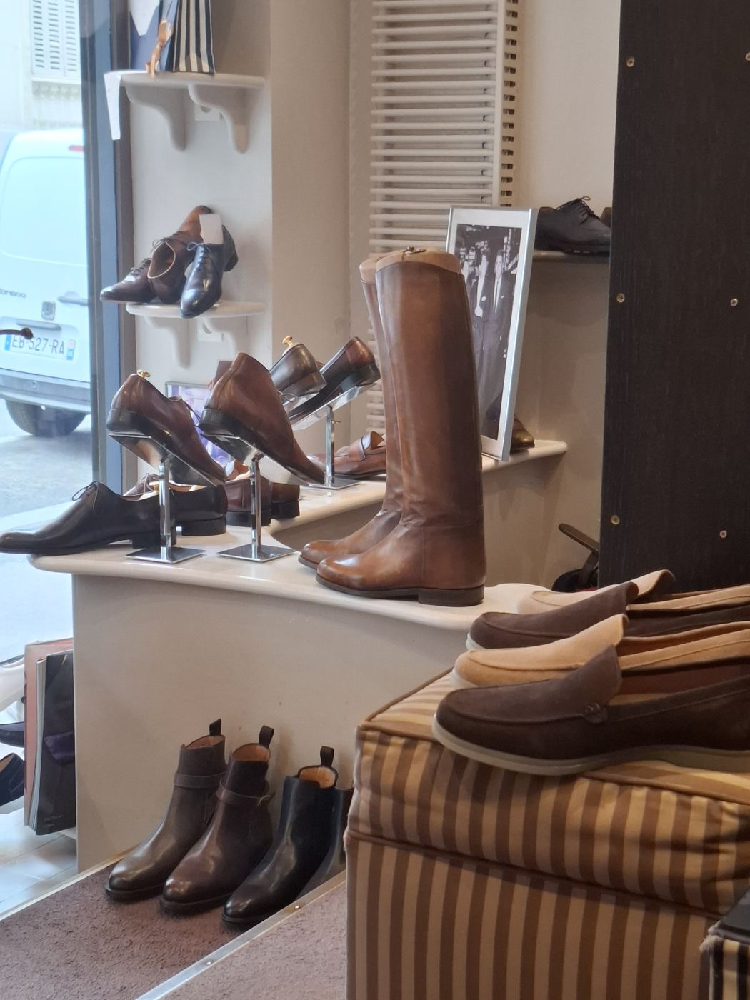
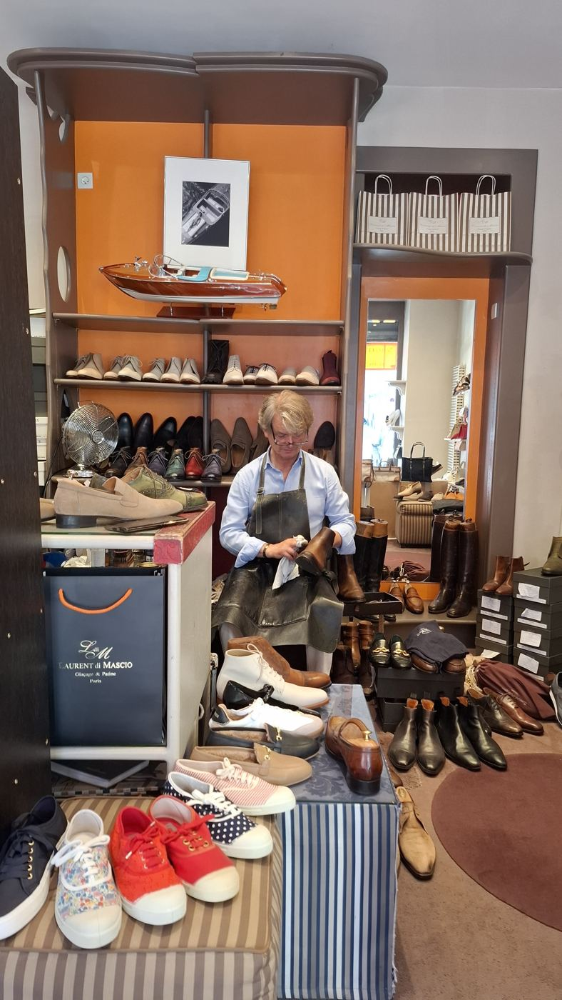
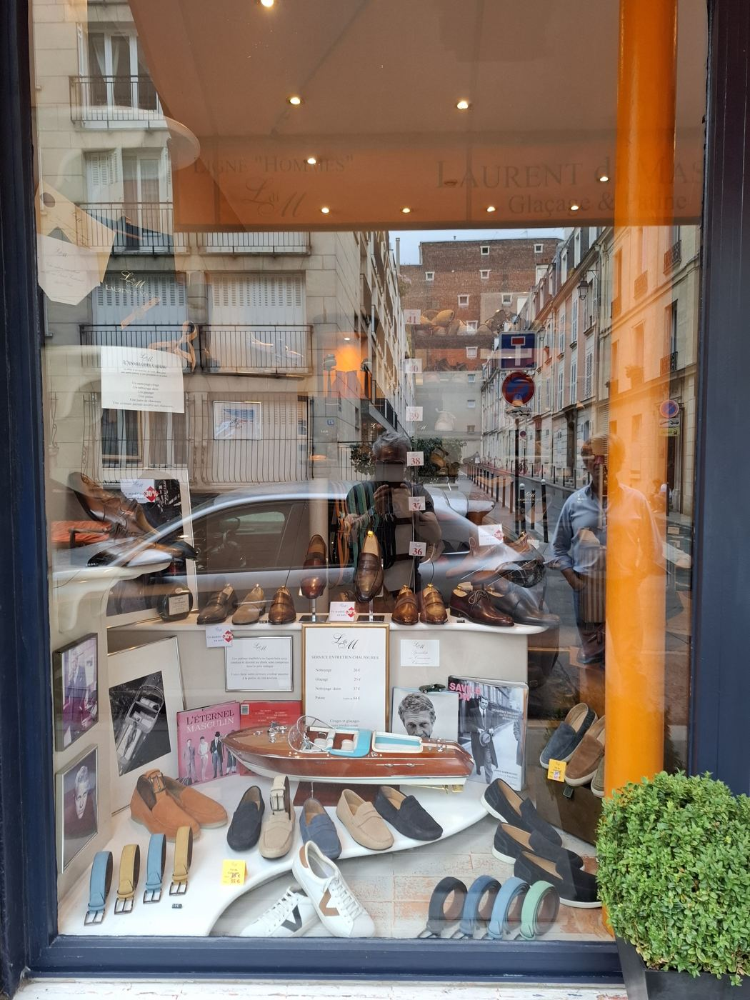

Nettoyage
Nettoyage, crème nourrissante, cirage : la paire repart comme au premier jour.
20 €Glaçages, patines sur mesure et entretien des chaussures à la main. Souliers homme et femme, ceintures patinées assorties. Laurent di Mascio prend le temps de chaque paire, dans sa boutique à deux pas de la porte Maillot.
Ouvert du mardi au samedi.

La patine se monte à la main, couche après couche, jusqu’à la nuance voulue. Raviver un cuir fatigué, foncer une pointe, changer complètement de teinte : tout se décide avec vous, au comptoir. À partir de 64 €.
La teinte, l’intensité, les dégradés. Vous apportez une idée, une photo, ou rien du tout.
Nettoyé et dégraissé pour que la couleur prenne en profondeur.
Teinture posée à la main, au pinceau et au chiffon, puis nourrie.
Cirage et glaçage, mat ou miroir, selon votre goût.
« Excellent chausseur, bottier, et des patines de toute beauté. »
Avis Google · 4,3 sur 5, 18 avis



Pas de machine : chaque paire est brossée, nourrie et cirée à la main. Les tarifs sont affichés en vitrine, et annoncés avant de commencer.
Nettoyage, crème nourrissante, cirage : la paire repart comme au premier jour.
20 €Le brillant miroir sur la pointe et le talon, monté à la cire et à l’eau.
25 €Nettoyage en douceur et redressage du velours, pour le daim et le nubuck.
37 €Couleur montée à la main, unie ou en dégradé, jusqu’à la nuance voulue.
à partir de 64 €Rayures, éraflures, cuir délavé : la teinte est reprise à la main.
sur devisLe même soin pour les grandes pièces de cuir.
sur devisCirages et glaçages sans rendez-vous, aux heures d’ouverture.
Une enveloppe du montant de votre choix, à utiliser en boutique :

Une sélection de chaussures en cuir, choisies pour durer. Et parce qu’elles sortent de chez un spécialiste de la patine, elles peuvent être personnalisées dès l’achat, ceinture assortie comprise.
20 rue Saint‑Ferdinand
75017 Paris
Entre l’avenue des Ternes et l’avenue de la Grande-Armée.

| Mardi | 11 h – 14 h · 15 h – 20 h |
| Mercredi | 11 h – 14 h · 15 h – 20 h |
| Jeudi | 11 h – 14 h · 15 h – 20 h |
| Vendredi | 11 h – 14 h · 15 h – 20 h |
| Samedi | 11 h – 14 h · 15 h – 20 h |
| Dimanche | Fermé |
| Lundi | Fermé |
En cas d’absence : 06 63 34 23 50.